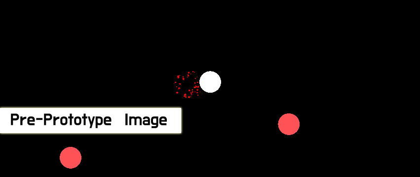

Fallen
Fallen in its early prototype currently has a player, enemy, enemy spawners, HP Display(Not Visible in Video), Projectiles, Basic Animations.
June 6th 2019 | Changed Cursor
+ Changed Default Cursor to Custom Cursor
June 6th 2019 | Finished Basic Prototype
+ Edited All/Most Scripts
+ HP Bar
+ Death of Player Reloads Game
+ Added Heart Sprite into Directory (NOT ADDED INTO GAME)
+ Death's Spawn Particles
June 5th 2019 | Added Player and other stuff
+ Player
+ Enemy
+ Spawners
+ Projectile
June 5th 2019 | Added Blank Project
+ Unity 2D Blank Project Added.
+ Added Scene Folder
+ First Scene Called "Game"
+ Setup Project Directory